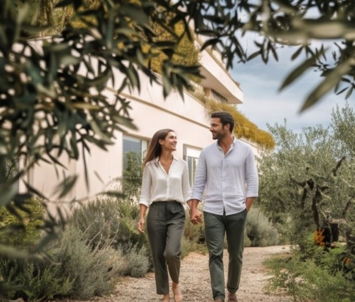

Family hotel & spa in Abruzzo
Italian Memories begin here.
A four-star seaside hotel & spa in Francavilla al Mare, made for rest and time together.
Why families come to us
Quality time has become a luxury.
The Villa Maria difference
More than a holiday. A chance to reconnect.
We take care of the details, so you can take care of each other.
Create memories together
The moments your family will talk about for years.

Pool & park days

Hotel restaurant

Spa moments

Slow discoveries
Something for every generation
Everyone gets the holiday they hoped for.
Guest reviews
Read what our guests say.
Reviews come only from guests who have stayed with us. Have your booking reference ready.
About Italian Memories
A family holiday that feels easy.
Italian Memories is our promise to families: we take care of the details so you can take care of each other. Here is what a stay looks like, from the first swim to the last dinner.
Pools for every age
The Blue Pool and the Riviera Pool sit in the private park, with a shallow pool for children with water games. Teenagers get space to swim and play; little ones stay safely in their depth.
The beach, without the hassle
A free shuttle runs to our partner lido on a white-sand beach in Francavilla al Mare, with a bar and restaurant for lunch on the sand.
Play room and Kids Club
Games, books, colouring and puzzles in the play room, and the whole park to explore. Parents can slip away to the spa while children play.
Time for parents
Every hotel guest has a free two-hour session in the Linfa spa: hydromassage pool, Turkish bath, sauna and sensory shower. Treatments for one or two can be added.
Days out together
The Guardiagrele adventure park, the zoo in Lanciano, the pinewood of the Pineta Dannunziana and bike rides along the coast: easy trips that become family stories.
Long family dinners
Shared plates of Abruzzo recipes on the terrace over the pool, while the children run on the lawn and nobody checks the time.
Questions & answers
Good to know before you go.
Is Villa Maria good for families with children?
Yes. There are two outdoor pools in a private park, a Kids Club, padel, a free shuttle to our partner beach and family dinners with Abruzzo recipes, plus the Linfa spa for parents.
What is there for children?
A play room with games, books, colouring and puzzles, a shallow pool with water games, the park, padel and the beach by shuttle. Nearby, families love the Guardiagrele adventure park and the zoo in Lanciano.
What pools does the hotel have?
Two outdoor pools in the park, the Blue Pool (up to 2.5 m deep) and the Riviera Pool, plus a shallow children’s pool with water games. The outdoor pools are open in the summer season; the Linfa spa has an indoor hydromassage pool all year.
Is there a beach?
Yes. A free shuttle takes you to a white-sand beach in Francavilla al Mare, a few kilometres away, at a private lido with a bar and restaurant that has an agreement with the hotel.
What does the Family Discount include?
Family rooms and suites for 2 adults and 2 teens, breakfast, spa access at the Linfa wellness centre, family activities, beach access with a free shuttle, and free parking with EV charging.
What are the check-in and check-out times?
Your check-in and check-out times are in your booking confirmation. If you need an early check-in or a late check-out, ask us and we will do our best.
Your next family memory starts here.
Discover why families return to our seaside hotel in Abruzzo.